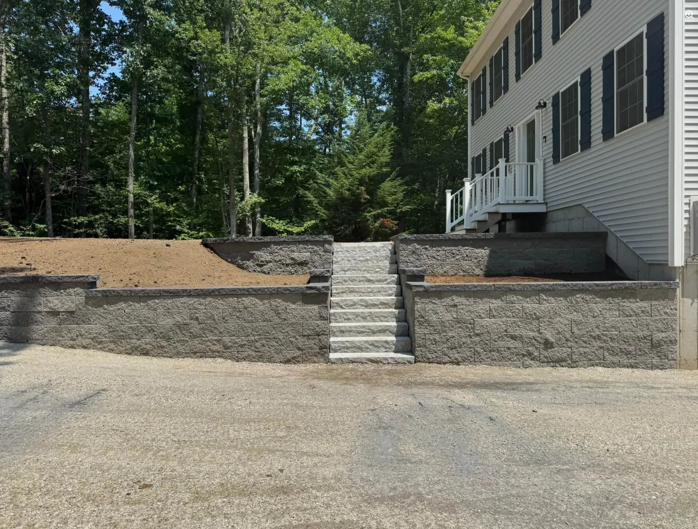
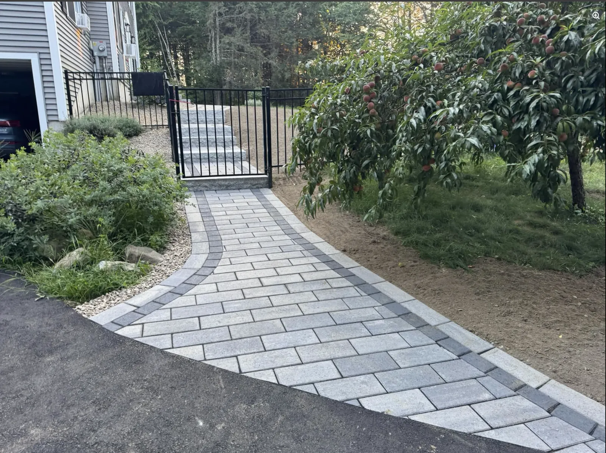
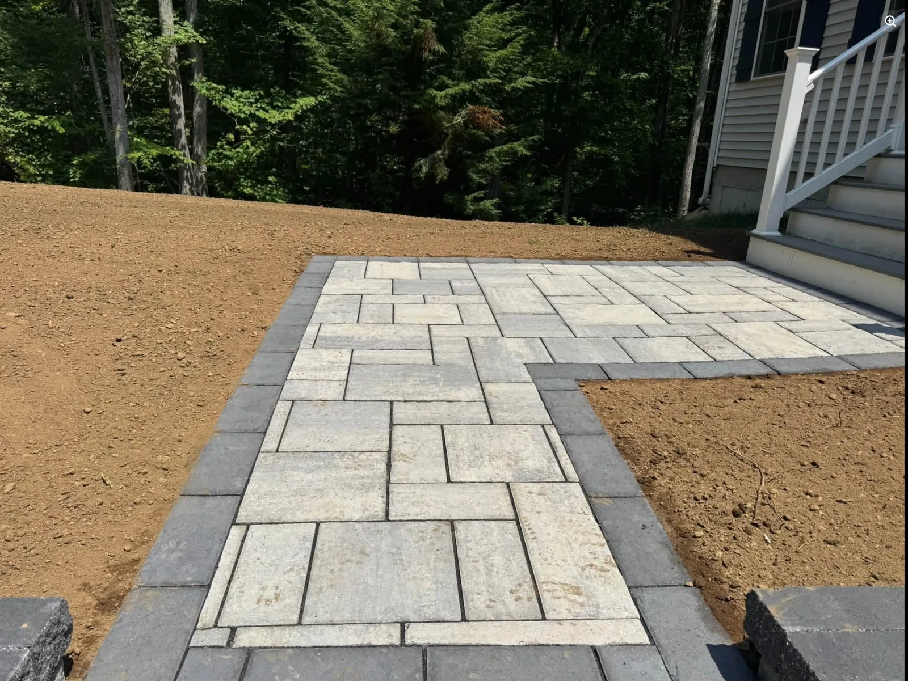
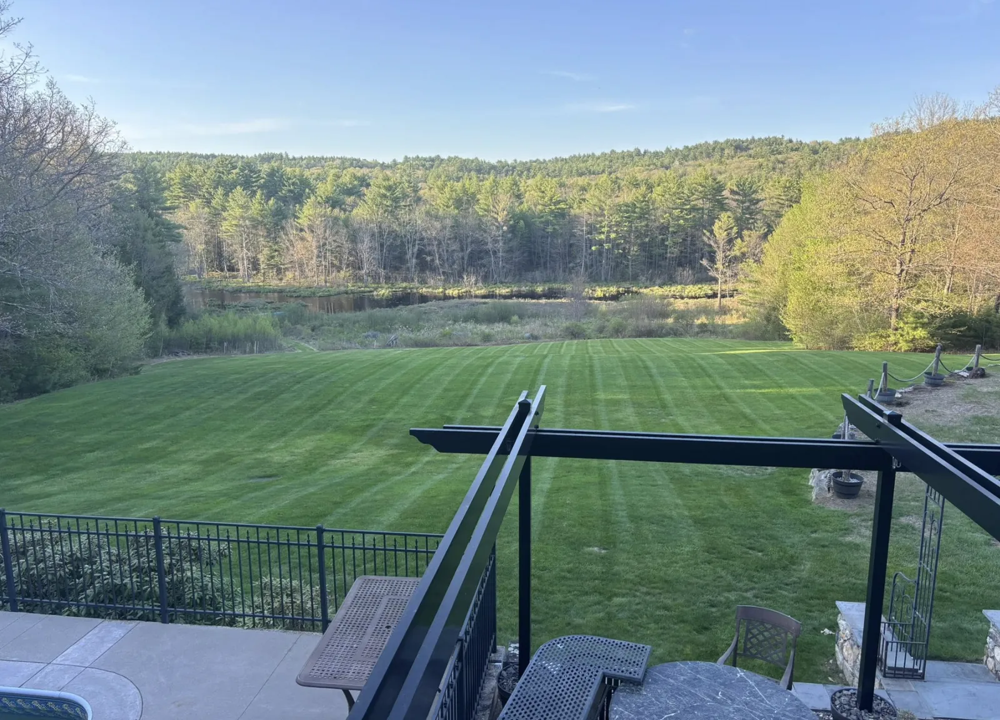
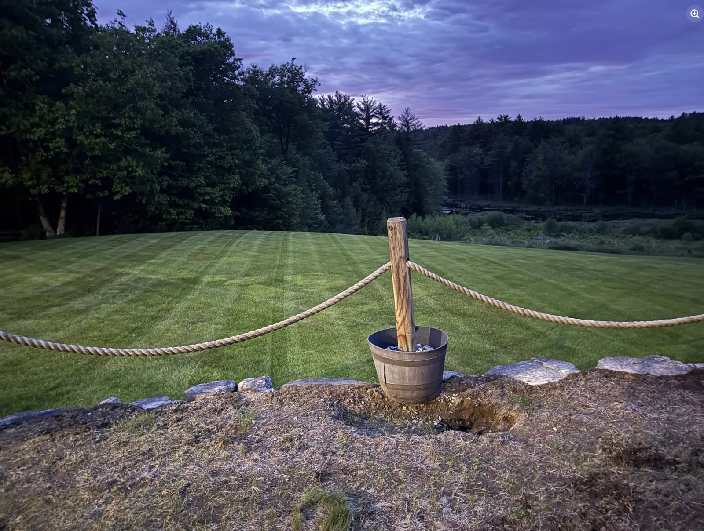
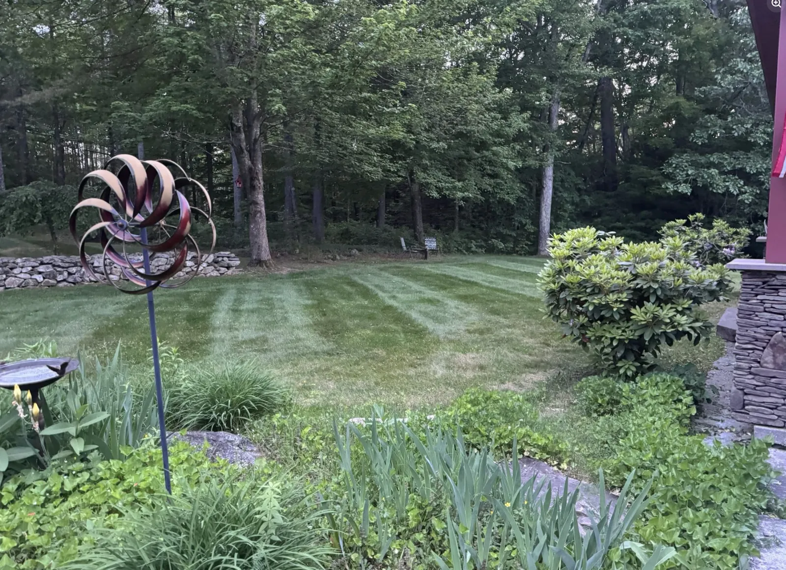

01
Patios & Outdoor Living
Durable, functional outdoor spaces designed for how you actually use your property.
Central & Southern New Hampshire
Hardscaping, excavation and site work with the equipment and experience to take your project from raw ground to finished space.

What we do
Whether you're creating an outdoor living space or starting with untouched ground, we handle the heavy work and the finish work.
Durable, functional outdoor spaces designed for how you actually use your property.
Structural retaining walls and natural stonework built for New Hampshire terrain.
Driveway construction, grading, drainage, excavation and site preparation.
Clearing and preparing overgrown or wooded property for its next use.
Practical, attractive entrances and transitions that complement your property.
Professional mowing and lawn maintenance that keeps larger residential properties looking clean, sharp and cared for.
Have something else in mind?
Recent work
Real projects. Real properties. Built to stand up to New Hampshire weather.

Hardscape • Walkways • Finish Work

Walkways • Pavers • Site Finish
Retaining Walls • Steps • Grading
Mowing & property care
Routine mowing for residential properties, including larger lawns and open acreage.



Local. Capable. Straightforward.
Quimby Hardscapes & Construction is a New Hampshire contractor specializing in hardscaping, excavation, site work and property care.
We approach every job with the same goal: do the groundwork correctly, build it to last, and leave you with a finished project that looks like it belongs on your property.
Start your project
Tell us what you're planning and we'll talk through the next steps.